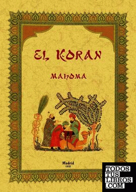

Revelaciones
El profeta Mahoma recibió las revelaciones del Corán a través del arcángel Gabriel (Yibril), según la tradición islámica.
Estas revelaciones ocurrieron de manera gradual durante aproximadamente 23 años, comenzando en el año 610 d.C., cuando Mahoma tenía 40 años.
Proceso de revelación:
- Primera revelación:
- Ocurrió en la Cueva de Hira, cerca de La Meca. Mahoma estaba meditando cuando el ángel Gabriel se le apareció y le ordenó:
"¡Lee!" (en árabe: Iqra’) .Esta es la apertura de la sura 96 (Al-‘Alaq).
- Estado de Mahoma durante las revelaciones:
- Experimentaba un estado de trance.
- A veces sudaba incluso en días fríos.
- Sentía un peso físico considerable.
- En otras ocasiones, oía un sonido como el de una campana.
- Mecanismo de transmisión:
- Gabriel le recitaba fragmentos que Mahoma memorizaba.
- Luego, Mahoma los transmitía oralmente a sus seguidores.
- Algunos los memorizaban y otros los escribían en huesos, cuero, o palmas de dátil.
- Compilación posterior:
- Después de la muerte de Mahoma, sus seguidores recopilaron todas las revelaciones en un solo libro: el Corán, tal como se conoce hoy.
